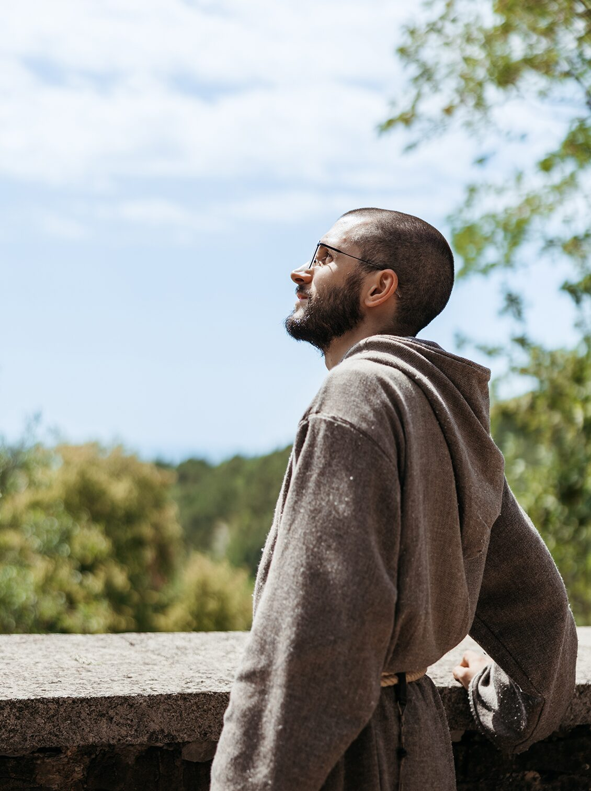
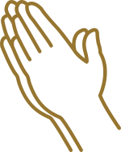
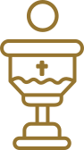
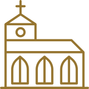
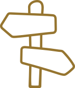
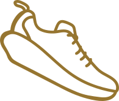
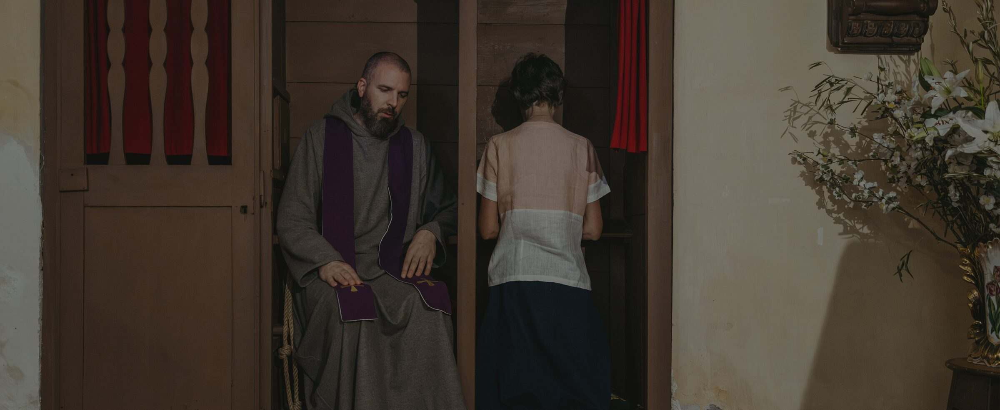

Sono chiamato?
Dio mi sta chiamando?
Il discernimento
Nell'intimo di ciascuno di noi sorgono tante domande che riguardano il senso della nostra vita: perché esisto? Che senso ha la mia esistenza in questo mondo? Che cosa devo fare nella vita?
«Signore, che cosa vuoi che io faccia?» supplicava san Francesco. Egli intuì che era possibile trovare una risposta soltanto mettendosi in ascolto di Dio.
In questo sta l'amore: non siamo stati noi ad amare Dio, ma è lui che ha amato noi.
— 1 Gv 4,10Dal sentirmi amato all'abbandono fiducioso in Dio
Una nostra risposta è possibile solo se scopriamo di essere amati in modo unico dal Padre e come conseguenza siamo disposti a corrispondere al suo Amore, fino a donargli tutto noi stessi.
Se dimentichiamo questo suo Amore grandissimo per noi e abbiamo paura di ciò che comporta, avremo timore della sua chiamata. Ma se siamo consapevoli del suo Amore per noi, potremo cominciare a fidarci di Lui, e ad essere docili a quel piano che Egli ci svela un po' per volta.
Il discernimento nasce dalla fiducia nel Signore, che ci farà comprendere ed ascoltare la sua Volontà su di noi. Con pazienza potremo intraprendere un cammino lasciandoci guidare da Gesù e con il sostegno della Vergine Maria.

Come capisco se ho la vocazione?
Ti proponiamo sei punti per comprendere se la vocazione religiosa può essere la tua strada.

Pregare
Impegnati a pregare ogni giorno. Dedica del tempo per assicurarti il silenzio e trova anche un luogo adatto ad ascoltare la voce del Signore.

Con Gesù
Fai crescere il tuo rapporto con Gesù tramite la preghiera quotidiana e il ricorso regolare ai sacramenti della Santa Eucaristia e della Confessione. Così mentre cresce la tua relazione con Gesù, Egli si farà conoscere e ti farà anche conoscere meglio te stesso.

La comunità
Conosci la nostra comunità religiosa e fatti conoscere. Ascolta i consigli dei fratelli, perché spesso questo è il modo con cui il Signore ti parla. E poi confrontati con il tuo direttore spirituale.

Una guida
Trova una persona di cui ti fidi (un religioso, un padre spirituale, un confessore) con cui poterti confidare e a cui porre le tue domande. Questa guida spirituale potrà aiutarti a capire se le ispirazioni vengono da Dio oppure no.

In movimento
Se ti stai interrogando sulla tua vocazione, allora è il momento di muoversi. Se rimani fermo, resti dove sei. Fai questo passo: contattaci.
Essere paziente
Lo Spirito Santo opera dentro di te preparando il tuo cuore a ricevere il suo dono. Accogli questo momento di crescita e di guarigione per poter essere libero interiormente e per rispondere al Signore che chiama.

«Voi mi invocherete e ricorrerete a me e io vi esaudirò. Mi cercherete e mi troverete, perché mi cercherete con tutto il cuore»— Geremia 29,12-13
Vuoi vivere un periodo di discernimento
e conoscere la comunità?
Sostieni i frati e il loro apostolato.
Il tuo contributo permetterà alla comunità di vivere concretamente la compassione e la comunione del Vangelo.
SOSTIENICI